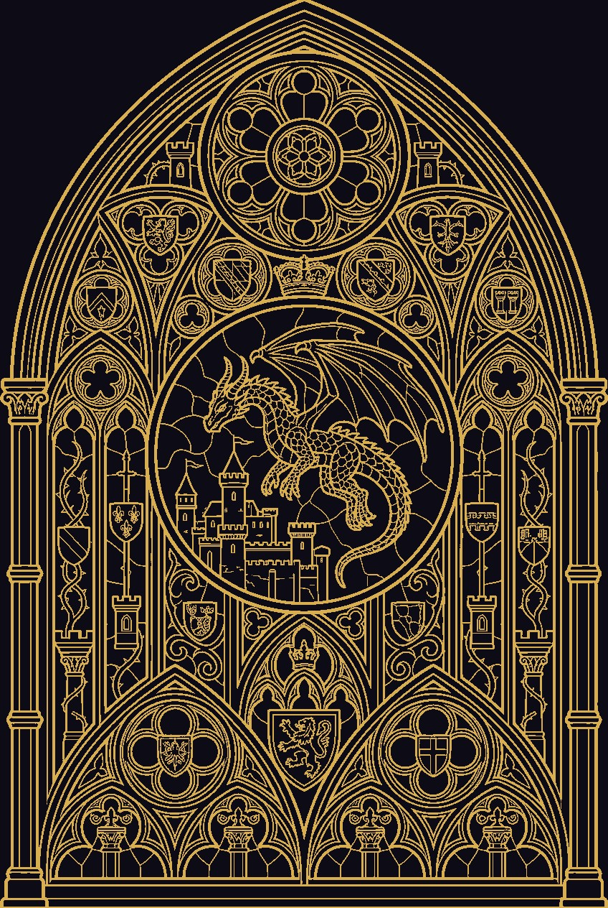
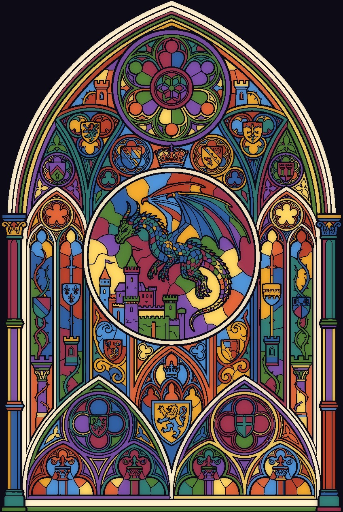
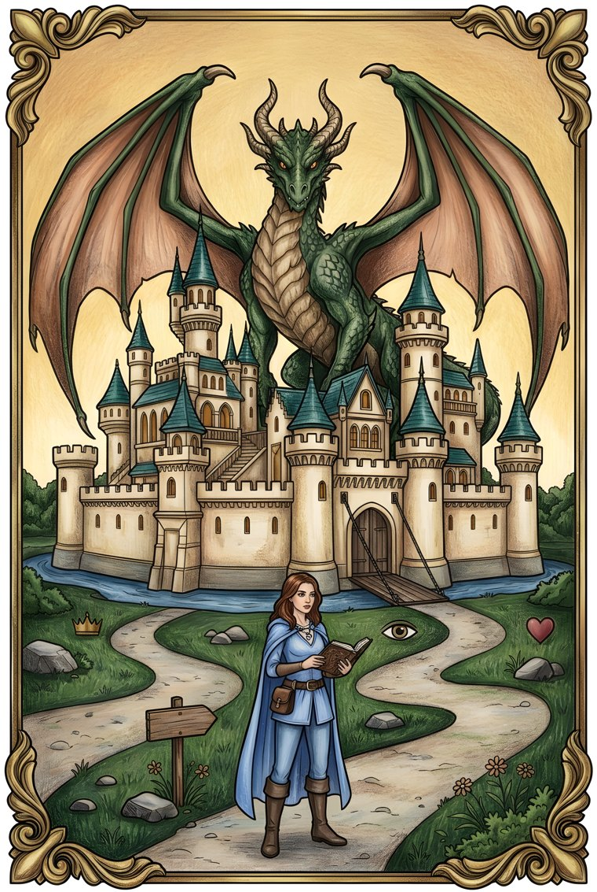

TIDES OF AETHERMOOR
An ocean adventure with Nerissa, where your palette shapes the moods of the sea and the fates of its sailors.
STORY COLORING BOOKS FOR GROWN-UPS
Intricate medieval fantasy pages, a story told in six chapters, and one secret: five of your color choices quietly decide how it ends.
CHOOSE A COLOR. WATCH THE WINDOW ANSWER.
The window is waiting. In the book, a choice like this one is how your story turns.


THE STORY ENGINE INSIDE EVERY BOOK
It looks like a coloring book and plays like a story. You never roll a die or read a rule. You pick the colors you love, and the book keeps count.
A banner, a dragon's scales, a traveling cloak. Any color you like.
Each color family quietly nudges one of three hidden paths. You won't know where you stand.
The last chapter opens one of three endings. Color it again to find the others.
No dice. No rulebook. No wrong colors.
TRY IT HERE
These two pages are extras, not from the book. Pick a color, tap a shape, and when you have colored enough, ask the page what your palette says about you.
Loading the page…
0 shapes colored
Color at least 12 shapes, then ask.

In the kingdom of Thornfield, a dragon stirs beneath the ancient mountain. You are Elara, and how you color your journey decides whether Varathos becomes a destroyer, an ally, or a legend.
Play it digitally, or print the PDF and use your own pencils.
IN THE MARGINS
Five baby dragons who wander into the edges of the book when you least expect them. Move your pointer like a candle. Tap one for its signature move.
A GROWING LIBRARY
An ocean adventure with Nerissa, where your palette shapes the moods of the sea and the fates of its sailors.
Help Pip color magical ingredients and brew impossible potions for a village in need. Mind the frogs.
The mailing list is almost ready. Until then, send a note that says "Add me" to this address.
coloringworlds@coloringworlds.network